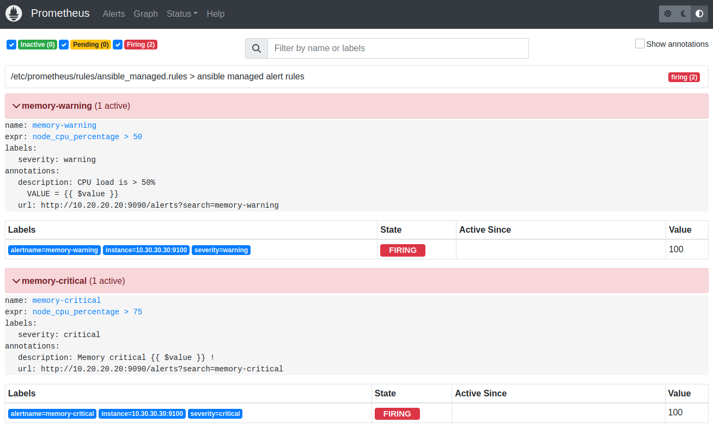

Prometheus + Grafana + Slack + SNS + Ansible
- Create 3 Ubuntu VM using Vagrant
- Install and configure Prometheus + Grafana + Alertmanager on a dedicated machine using Ansible
- Install Node Exporter on all machines using Ansible
- Setup SNS Email notification using Terraform
- Setup Slack Notification on a channel dedicated to alerts
- Do a CPU stress test to see the dashboards react and receive notifications
The project
This github project is composed by :
- vagrant : some vagrant assets used to create 3 VM
- terraform : terraform templates used to create a SNS topic + an IAM user + …
- ansible : an ansible playbook using 4 roles to install + configure all monitoring tools
Setup variables
Let’s start by initializing the project
The env-create script creates an .env file at the root of the project :
# create .env file
make env-create
Now update the .env file to use your own variables :
SNS_EMAIL=[change-here]@gmail.com
SLACK_API_URL=https://hooks.slack.com/services/[change-here]
SLACK_CHANNEL=#[change-here]
Setup Slack
Create a slack channel. I choose the name alerts :
Create a new Slack app :

Setup the name and choose a workspace :
Select Incoming Webhooks functionnality :
Activate Incoming Webhooks :
Enable the application :
Create a new Webhook :

Important : copy / paste the Hello, World! curl example in a Terminal to test / activate the channel messaging :
curl -X POST -H 'Content-type: application/json' --data '{"text":"Hello, World!"}' https://hooks...
Copy a new Webhook URL :

Paste it in the .env file :
SLACK_API_URL=https://hooks.slack.com/services/[change-here]
Setup infrastructure
Initialize the terraform project :
# terraform init (upgrade) + validate
make terraform-init
Validate and apply the terraform project :
# terraform create sns topic + ssh key + iam user ...
make infra-create
The SNS Topic is created :
A confirmation email is received :
The email used is the one defined in the .env file :
SNS_EMAIL=[change-here]@gmail.com
Click the confirm subscription link :
This is confirmed :
Create 3 machines using Vagrant
A Vagrantfile is used to create 3 Ubuntu machines :
# create monitoring + node1 + node2
vagrant-up
The script also setup ~/.ssh/known_hosts and ~/.ssh/config :
for ip in $MONITORING_IP $NODE1_IP $NODE2_IP
do
# prevent SSH warning :
# @ WARNING: REMOTE HOST IDENTIFICATION HAS CHANGED! @
# @ IT IS POSSIBLE THAT SOMEONE IS DOING SOMETHING NASTY! @
ssh-keygen -f "$HOME/.ssh/known_hosts" -R "$ip" 1>/dev/null 2>/dev/null
# prevent SSH answer :
# Are you sure you want to continue connecting (yes/no/[fingerprint])?
# /!\ important option `-p` MUST be defined BEFORE ip $SSH_HOST
ssh-keyscan $ip 2>/dev/null >> ~/.ssh/known_hosts
done
if [[ -z $(grep "Host monitoring $MONITORING_IP # $PROJECT_NAME" ~/.ssh/config) ]];
then
echo "
Host monitoring $MONITORING_IP # $PROJECT_NAME
HostName $MONITORING_IP
User vagrant
IdentityFile ~/.ssh/$PROJECT_NAME
# ...
"
fi
After that, we can connect directly to our machines with :
ssh monitoring
# or
ssh node1
# or
ssh node2
Install monitoring tools using Ansible
The following command install + configure everything needed :
# install + configure prometheus + grafana + alert manager ...
make ansible-play
Our playbook contains 4 roles :
- name: install node_exporter
hosts: all
become: true
roles:
- node-exporter
- name: install prometheus + grafana
hosts: monitoring
become: true
roles:
- prometheus
- alertmanager
- grafana
-
The node-exporter role is a wrapper for the cloudalchemy/ansible-node-exporter role
-
The prometheus role is a wrapper for the cloudalchemy/ansible-prometheus role
The vars contains importants setup directives :
prometheus_global:
# demo intervals
scrape_interval: 6s
scrape_timeout: 3s
evaluation_interval: 6s
prometheus_alertmanager_config:
- scheme: http
static_configs:
- targets:
- "{{ ansible_host }}:9093"
prometheus_alert_rules:
- record: 'node_cpu_percentage'
expr: 100 - (avg by (instance) (rate(node_cpu_seconds_total{mode="idle"}[1m])) * 100)
- alert: memory-warning
expr: node_cpu_percentage > 50
labels:
severity: warning
annotations:
description: "{% raw %}CPU load is > 50%\n VALUE = {{ $value }}{% endraw %}"
url: "http://{{ ansible_host }}:9090/alerts?search=memory-warning"
- alert: memory-critical
expr: node_cpu_percentage > 75
labels:
severity: critical
annotations:
description: "{% raw %}Memory critical {{ $value }} !{% endraw %}"
url: "http://{{ ansible_host }}:9090/alerts?search=memory-critical"
A must see : Awesome Prometheus alerts website
Targets are available at http://10.20.20.20:9090/targets :
Alerts are available at http://10.20.20.20:9090/alerts :
- The alertmanager role is a wrapper for the cloudalchemy/ansible-alertmanager role
Slack + email notifications are defined here :
- ansible.builtin.include_role:
name: ansible-alertmanager
vars:
alertmanager_version: "{{ alertmanager_latest_version }}"
alertmanager_template_files:
- "{{ current_role_path }}/templates/*.tmpl"
alertmanager_slack_api_url: "{{ alertmanager_slack_url }}"
alertmanager_receivers:
- name: default-dummy
- name: slack
slack_configs:
- send_resolved: true
# The channel or user to send notifications to.
channel: "{{ alertmanager_slack_channel }}"
title: '{% raw %}{{ template "slack-message-title" . }}{% endraw %}'
text: '{% raw %}{{ template "slack-message-description" . }}{% endraw %}'
- name: sns
sns_configs:
- send_resolved: true
# SNS topic ARN, i.e. arn:aws:sns:us-east-2:698519295917:My-Topic
topic_arn: "{{ sns_topic_arn }}"
sigv4:
access_key: "{{ sns_access_key }}"
secret_key: "{{ sns_secret_key }}"
region: "{{ sns_region }}"
alertmanager_route:
# default receiver (nothing behind, we'll use routes below)
receiver: default-dummy
# To aggregate by all possible labels use the special value '...' as the sole label name, for example:
# group_by: ['...']
group_by: [...]
group_interval: 6s # testing delay
group_wait: 6s # testing delay
repeat_interval: 3h
# Zero or more child routes.
routes:
- receiver: sns
continue: true
- receiver: slack
continue: true
- The grafana role is a wrapper for the cloudalchemy/ansible-grafana role
Datasource and dashboards are defined here :
grafana_datasources:
- name: prometheus
type: prometheus
access: proxy
url: 'http://127.0.0.1:9090'
basicAuth: false
# https://grafana.com/grafana/dashboards/1860
# https://grafana.com/grafana/dashboards/11074
grafana_dashboards:
# Node Exporter Full
- dashboard_id: 1860
revision_id: 30
datasource: "{{ grafana_datasources.0.name }}"
# Node Exporter for Prometheus Dashboard
- dashboard_id: 11074
revision_id: 9
datasource: "{{ grafana_datasources.0.name }}"
Grafana is available at http://10.20.20.20:3000 :
Use admin / password to login
Two dashboards are available :
Let’s see Node Exporter Full on node1 with Last 5 minutes and 10s refresh :
CPU Stress test
SSH login to node1 :
ssh node1
Start the CPU stress test :
vagrant@node1:~$ stress --cpu 2
After few seconds :
The table view of the 3 machines http://10.20.20.20:9090/graph?g0.expr=node_cpu_percentage :
The graph view of the 3 machines http://10.20.20.20:9090/graph?g0.expr=node_cpu_percentage&… :
The alerts are firing http://10.20.20.20:9090/alerts :

Slack notifications are received :
Email notifications are received :
The other dashboard also show critical values :

Cleaning
This demonstration is now over, we are destroying the resources :
# destroy the 3 machines
vagrant-destroy
# terraform destroy sns topic + ssh key + iam user ...
infra-destroy